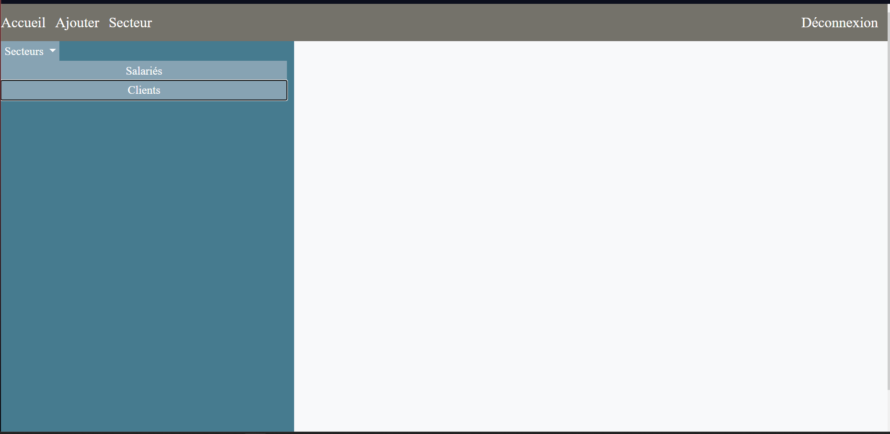
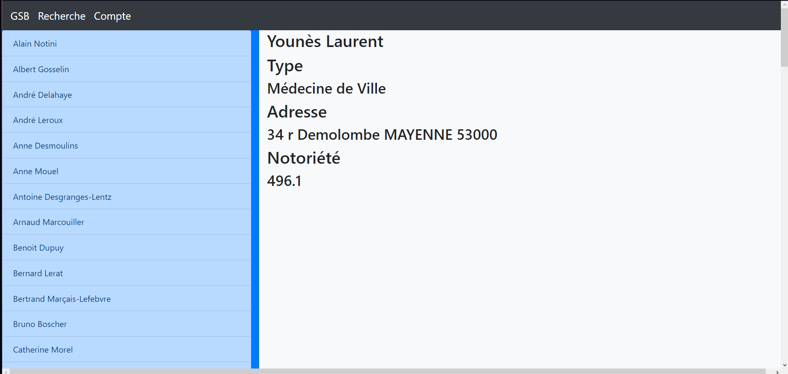

Projet stardust miner
compétences : intégration JavaScript, création application dynamique
Projet de site dynamique réalisé avec Erwan Denais dans le cadre de notre formation. Nuos avons réalisé un clicker car cette idée nous plaisait et réspectait les contraintes imposés.

Stage de première année
compétences : intégration JavaScript, création application dynamique, réspect d'un cahier des charges, intégrations de fichiers
Projet de stage de première année consistant à créer un site regroupant les informations importantes à connaïtre lors d'une période de garde dans une interface simple d'utilisation.
 Voir le rapport de stage
Voir le rapport de stage
Stage de deuxième année
compétences : intégration JavaScript, création application dynamique, réspect d'un cahier des charges, php Laravel, bootstrap, mysql
Projet effectué lors de ma deuxième année de stage consistant à créer une interface de visualisation de clients et de salariés simplifiés, sécurisée et maintenable.
 Voir le rapport de stageTP installation server FTP ubuntu
compétences : gérer le patrimoine informatique, mettre un service à disposition
Lors de ma première année de bts, j'ai effectué mon stage à l'hôpital de Saint-Nazaire. Ma mission était de créer un site web qui permettrait de faciliter le travail du personnel d'astreinte en facilitant l'accès des informations et documents impoprtants.
Voir le compte renduGSB
compétences : php Laravel, Bootstrap, intégration JavaScript, mysql
Projet de site de centralisation de compte rendu de visite pour un laboratoir.
 Voir l'énoncéCFUN
compétences : JFX, SceneBuilder, Hibernate, JPA mysql
Création d'un logiciel de gestion d'entrées et de sorties d'une salle de sport avec calcul des prix et génération de tickets.